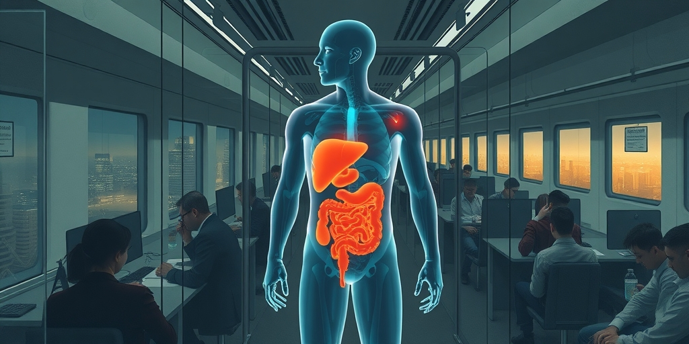

小汪老师的成长洞察 · 属于你的成长专栏
你花高价买来的排毒茶，效果不如多喝一杯水；你迷信的免疫增强剂，可能让身体攻击自己。两个最流行的健康口号，恰好踩在了生理机制的反面。它们共享同一个错误假设：你的身体不够聪明，需要外部产品来接管。

人体自备一整套专职处理代谢废物的系统。肝脏负责分解和转化毒素，肾脏负责过滤血液并排出水溶性废物。肺排出二氧化碳，皮肤通过汗液排出部分代谢产物。消化道则负责排出食物残渣和部分毒素。
这套系统不需要休息，不需要启动，不需要外部提示。它从你出生那一刻就在持续运转。它的效率远超市面上任何一款排毒产品。如果你真的需要外力来排毒，那意味着肝肾已经衰竭，你需要的不是保健品，是ICU。
这个事实被养生产业刻意模糊了。它们让你相信，身体的排毒系统不够用，需要额外帮助。但身体真正需要的支持，是减少对它的人为干扰。少喝酒，肝脏的代谢负担就降低。喝够水，肾脏的过滤功能就顺畅。吃够纤维，肠道菌群和蠕动就稳定。这些建议朴素到无聊，卖不出溢价，但证据最扎实。
市面上大量的排毒产品，拆开来看大致可以归为两类。第一类本质上是泻药。排毒茶、清肠茶的核心机制是刺激肠道加速排便。服用后那种拉出很多脏东西的直观感受，只是加快了消化道原本就会完成的排出过程。
腹泻带来的水分和电解质流失，反而给身体增加了额外负担。那种轻松了的感觉，更接近脱水后的错觉，而不是清除了什么额外毒素。第二类产品则缺乏站得住脚的作用机制。效果基本停留在安慰剂层面。服用者因为“我正在为健康做一件事”的心理暗示而感觉良好。
但产品本身对身体实际的代谢通路，几乎没有可验证的额外贡献。排毒经济贩卖的从来不是排毒本身的效果。它贩卖的是“我正在主动为身体做一件特别的事”这种心理满足感。越戏剧化、越有仪式感的产品，越容易在这种心理需求上找到市场。
提高免疫力这个说法比排毒更隐蔽。免疫系统负责抵御病原体，增强它当然是好事，这个逻辑链条看似天经地义。但它的问题恰恰出在越强越好这个隐含前提上。免疫系统最理想的状态不是强，而是准。
在需要反应的时候精准启动，在不需要反应的时候及时收敛。免疫系统过度反应本身就会带来健康问题。过敏反应，本质上是免疫系统把本该被忽略的无害物质误判成威胁，发起不必要的攻击。这是免疫系统过强而非过弱的直接后果。
更严重的是自身免疫性疾病。类风湿关节炎、系统性红斑狼疮、1型糖尿病，它们的共同机制是免疫系统丧失了区分自身组织和外部威胁的精准边界。转而对自己的身体发起攻击。这些疾病的病理基础不是免疫力不够，而是免疫系统在错误的方向上太过努力。
如果一款保健品真的能拉高某些免疫指标，这件事未必值得庆祝。一个被人为拉高、却失去精准判断能力的免疫系统，反而可能增加过度反应和误伤自身组织的风险。真正支持免疫系统精准调节的，同样是朴素到缺乏商业想象力的日常习惯。充足睡眠，适度运动，均衡营养，管理压力。这些做法没有一个可以被包装成一瓶搞定的产品。
排毒和免疫增强这两个概念之所以能长期占据健康话语的核心，背后有一种共同的心理机制。人们更容易相信做点什么比什么都不做更有效。即使什么都不做，也就是信任身体本身的自我调节能力，在大多数情况下更接近真相。
面对健康这种高度不确定又切身相关的领域，主动采取行动能带来一种我在掌控局面的心理安全感。相信身体自己能处理好这种被动姿态，虽然更接近生理学事实，却很难提供同等的心理满足。
这种心理需求恰好为整个健康消费产业提供了持续的增长动力。只要能够精准命中我想为自己的健康主动做点什么这种普遍心理，产品本身的实际效果反而变成了次要问题。排毒和提高免疫力之所以比睡够觉、少喝酒、管理压力更容易被市场化，正是因为前者可以被包装成具体的、购买即可获得的产品。
而后者只是一些需要长期坚持的生活习惯调整，缺乏能够形成商业闭环的卖点。从更大的视角看，健康传播领域里，越是符合身体实际运作机制的建议，往往越朴素，越缺乏传播爆点。而越具有传播力和商业转化潜力的说法，往往越依赖对身体机制的简化甚至扭曲。
写给你的话
当一个健康概念传播得格外顺畅、格外容易被接受时，或许恰恰应该多问一句：它是不是刚好绕开了身体本身真正复杂、也真正精密的运作机制？你的身体在你看这篇文章的几分钟里，已经默默处理了无数代谢废物，精准识别了成千上万种外来物质。它不需要你替它做主，只需要你不添乱。
小汪老师的成长洞察 · 属于你的成长专栏